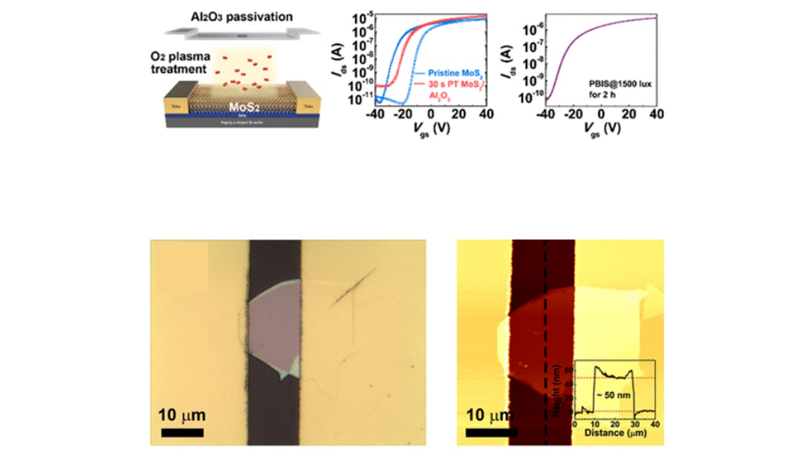
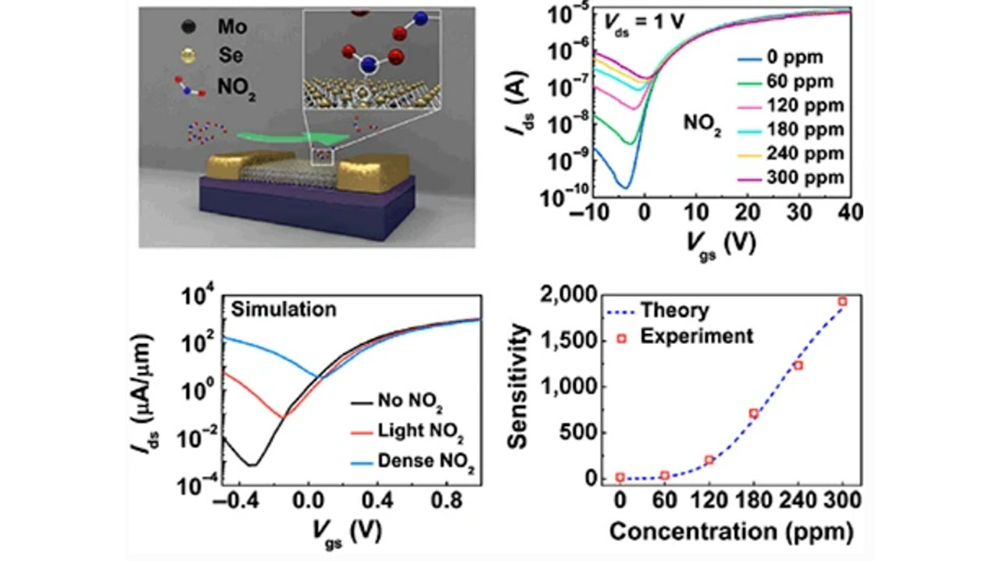
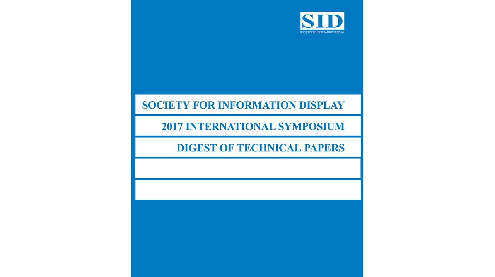
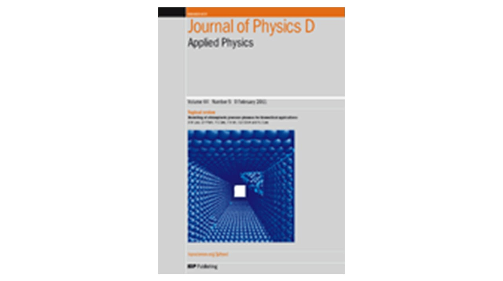
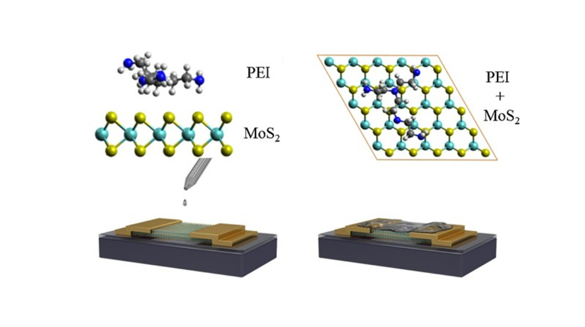
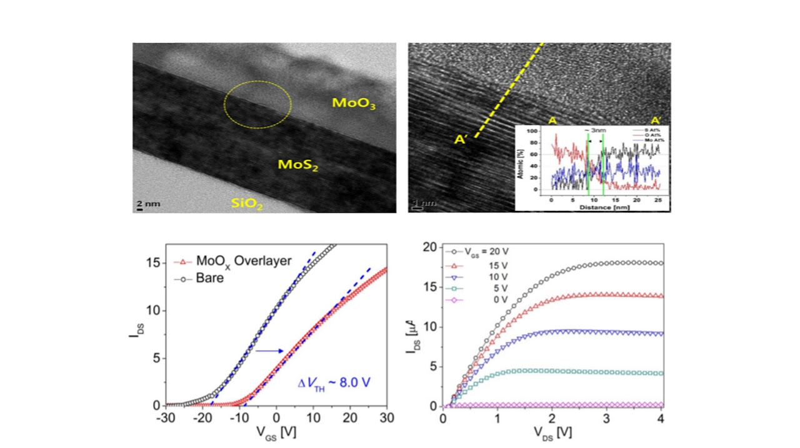
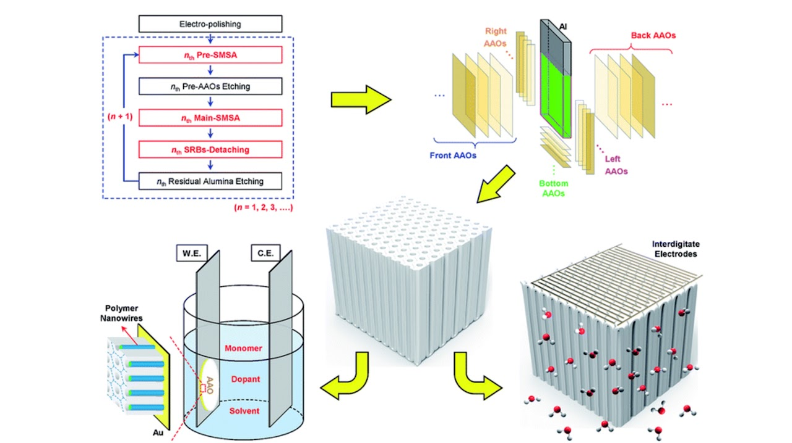

2017가천대학교 이전
[9] Improving the Stability of High-Performance Multilayer MoS2 Field-Effect Transistors, ACS applied materials & interfaces, 11월 (2017)
Na Liu, Jongyeol Baek, Seung Min Kim, Seongin Hong, Young Ki Hong, Yang Soo Kim, Hyun-Suk Kim, Sunkook Kim, Jozeph Park

[8] A highly sensitive chemical gas detecting transistor based on highly crystalline CVD-grown MoSe2 films, Nano Research, 6월 (2017)
Jongyeol Baek, Demin Yin, Na Liu, Inturu Omkaram, Chulseung Jung, Healin Im, Seongin Hong, Seung Min Kim, Young Ki Hong, Jaehyun Hur, Youngki Yoon, Sunkook Kim

[7] High Mobility Flexible 2D Multilayer MoS2 TFTs on Solution‐Based Polyimide Substrates, SID Symposium Digest of Technical Papers, 5월 (2017)
Seongin Hong, Muhammad Naqi, Uihyun Jung, Na Liu, Hyuk-Jun Kwon, Costas P Grigoropoulos, Young Ki Hong, Sunkook Kim

[6] Recent progress in high-mobility thin-film transistors based on multilayer 2D materials, Journal of Physics D: Applied Physics, 3월 (2017)
Young Ki Hong, Na Liu, Demin Yin, Seongin Hong, Dong Hak Kim, Sunkook Kim, Woong Choi, Youngki Yoon

[5] The doping mechanism and electrical performance of polyethylenimine‐doped MoS2 transistor, physica status solidi c, 3월 (2017)
Seongin Hong, Geonwook Yoo, Dong Hak Kim, Won Geun Song, Ong Kim Le, Young Ki Hong, Kaito Takahashi, Inturu Omkaram, Do Ngoc Son, Sunkook Kim

[4] Enhanced photoresponsivity of multilayer MoS2 transistors using high work function MoOx overlayer, Applied Physics Letters, 1월 (2017)
Geonwook Yoo, Seongin Hong, Junseok Heo, Sunkook Kim

[3] Massive, eco-friendly, and facile fabrication of multi-functional anodic aluminum oxides: application to nanoporous templates and sensing platforms, RSC advances, 1월 (2017)
Seok Hwan Jeong, Hea Lin Im, Seongin Hong, Heekyeong Park, Jongyeol Baek, Dong Hyuk Park, Sunkook Kim, Young Ki Hong
